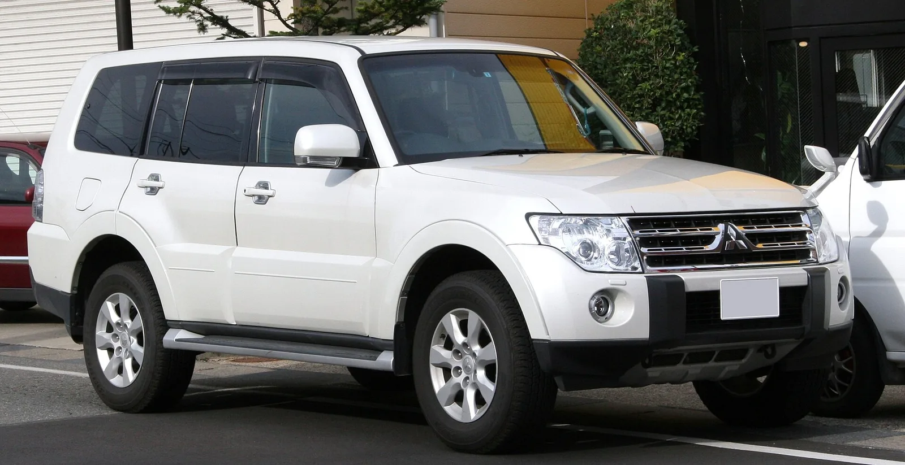

▲ 파제로가 플래그십 아래로 두 개의 소형 모델을 더한다 ⓒ Wikimedia Commons
파제로가 한 대에서 세 대가 됩니다.
2027년형 플래그십 파제로 아래로 두 개의 소형 모델이 붙습니다. 하나는 RAV4를 겨냥한 중형 크로스오버, 다른 하나는 경차 규격의 파제로 미니입니다.
공통점은 하이브리드와 사륜구동입니다. 미쓰비시가 잘하던 것으로 돌아가겠다는 신호입니다.
1. 세 대의 구성
| 모델 | 급 | 구조 | 시기 |
|---|---|---|---|
| 파제로 (플래그십) | 대형 | 래더프레임 | 2027년형 |
| 중형 크로스오버 | 중형 | 전용 모노코크 | 2028~2029년 |
| 파제로 미니 | 경차 | 모노코크 + 지상고 확보 | 2030년 무렵 |
플래그십만 래더프레임입니다. 아래 두 대는 모노코크입니다.
| 구분 | 래더프레임 | 모노코크 |
|---|---|---|
| 구조 | 사다리형 프레임 위에 차체 | 차체 자체가 구조 |
| 비틀림 대응 | 강하다 — 험로에 유리 | 상대적으로 약하다 |
| 무게 | 무겁다 | 가볍다 |
| 승차감 | 거칠다 | 좋다 |
| 실내 공간 | 불리 | 유리 |
즉 파제로라는 이름을 붙였지만 성격은 다릅니다. 위는 진짜 오프로더, 아래 둘은 오프로드 인상을 가진 도심형에 가깝습니다.
2. RAV4를 어떻게 상대하나
중형 크로스오버는 RAV4와 마쓰다 CX-5를 직접 겨냥합니다. 세계에서 가장 경쟁이 치열한 세그먼트입니다.
미쓰비시가 내세우는 차별점은 사륜구동입니다. 보도는 "사륜구동 기술을 앞세워 RAV4·CX-5 같은 경쟁 모델과 구분하겠다"는 방향을 전했습니다.
| 기술 | 내용 |
|---|---|
| S-AWC | Super All Wheel Control — 랜서 에볼루션에서 다듬은 사륜 제어 |
| 트윈모터 사륜 | 아웃랜더 PHEV에 적용 — 앞뒤 모터로 기계적 연결 없이 사륜 |
| 다카르 랠리 | 파제로로 12회 종합 우승한 이력 |
미쓰비시가 사륜을 브랜드 자산으로 내세우는 근거는 실제로 있습니다. 문제는 이 자산이 소비자에게 얼마나 인식돼 있느냐입니다.
준중형 SUV 구매층 다수는 사륜을 눈길 대비용으로만 봅니다. S-AWC 같은 제어 기술이 구매 결정에 작용하려면, 그 차이를 설명이 아니라 체감으로 전달해야 합니다.

▲ 중형 크로스오버는 아웃랜더의 부품을 일부 공용한다
3. 경차 SUV라는 장르
파제로 미니는 일본 경차(케이카) 규격입니다.
| 항목 | 기준 |
|---|---|
| 전장 | 3,400mm 이하 |
| 전폭 | 1,480mm 이하 |
| 전고 | 2,000mm 이하 |
| 배기량 | 660cc 이하 |
이 규격 안에서 SUV를 만드는 것은 까다롭습니다. 폭이 1,480mm로 제한되면 트레드(좌우 바퀴 간격)를 넓힐 수 없습니다. 차고를 올리면 전복 안정성이 급격히 나빠집니다.
그래서 보도가 "모노코크에 지상고를 확보한다"고 표현한 것입니다. 본격 오프로더가 아니라, 경차 규격 안에서 가능한 만큼 올린다는 뜻입니다.
파워트레인은 X포스의 하이브리드를 가져옵니다. 사륜구동도 선택 가능합니다. 일본에서 경차 사륜은 적설 지역 수요가 뚜렷합니다.
4. 파제로 미니라는 이름
파제로 미니는 새 이름이 아닙니다. 1994년부터 2012년까지 실제로 판매됐던 모델입니다.
당시 파제로 미니는 경차 규격의 진짜 사륜 SUV였습니다. 파트타임 사륜에 저단 기어까지 갖췄습니다. 일본 내수에서 마니아층을 형성했고, 지금도 중고 시장에서 값이 유지되는 모델입니다.
| 구분 | 내용 |
|---|---|
| 득 | 이미 알려진 이름 — 마케팅 비용 절감 |
| 득 | 기존 팬층의 관심 |
| 실 | 원조가 래더프레임에 파트타임 사륜이었다 — 모노코크 하이브리드와 성격이 다르다 |
| 실 | 기대와 실물의 간격이 실망으로 이어질 수 있다 |
세 번째 항목이 위험 요소입니다. 이름을 되살릴 때 흔히 나오는 문제입니다. 앞서 혼다가 프렐류드를 부활시키면서 원래 성격(스페셜티 쿠페)을 지킨 것과 비교하면, 파제로 미니는 성격이 달라지는 쪽입니다.

▲ 파제로는 다카르 랠리에서 12회 종합 우승한 이력을 갖고 있다
5. 국내와의 관계
미쓰비시는 국내에서 판매되지 않습니다. 파제로 미니는 일본 전용이라 미국에도 가지 않습니다.
다만 중형 크로스오버는 다릅니다. RAV4와 CX-5를 겨냥한다면 글로벌 판매를 전제로 한 모델입니다.
국내 시장 관점에서 흥미로운 지점은 경차 SUV라는 장르 자체입니다. 국내에도 캐스퍼가 같은 자리를 노리고 있습니다. 경차 규격에서 SUV 인상을 만드는 설계는 두 나라에서 같은 과제를 안고 있습니다.

▲ 중형 크로스오버는 2028~2029년, 파제로 미니는 2030년 무렵으로 예정돼 있다
6. 정리
미쓰비시가 2027년형 파제로 아래로 두 개의 소형 모델을 추가합니다.
중형 크로스오버는 RAV4·CX-5를 겨냥하며 전용 모노코크 플랫폼에 아웃랜더 부품을 일부 공용하고, 하이브리드를 얹습니다. 시기는 2028~2029년입니다.
파제로 미니는 경차 규격으로 X포스의 하이브리드를 쓰며 사륜을 선택할 수 있습니다. 2030년 무렵이며 일본 전용입니다. 두 모델 모두 하이브리드 효율과 실제 사륜구동 성능을 함께 내세우는 방향입니다.